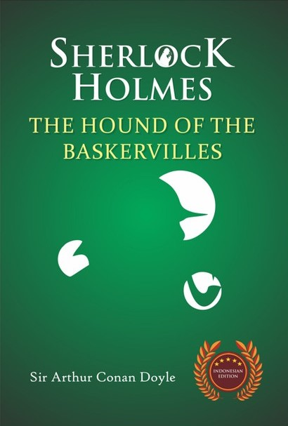
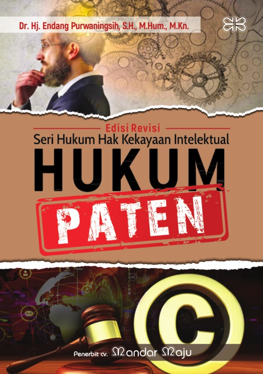

Jadwal Buka

Senin-Jumat
08.00 WITA - 16.00 WITA
Buku Terpopuler
Galeri Buku
 |
 |
|||
| Sherlock Holmes A Study In Scarlet | Ke Mana Larinya Harta Bersama Setelah Perceraian? | Komputer Grafis, Belajar Elemen Dasar Grafis Menjadi Pro | Sejarah Lengkap Dunia Abad Pertengahan 500-1400 M | Sherlock Holmes The Sign of The Four |
| Sir Arthur Conan Doyle Shira Media 9786021785775 |
Verlyta Swislyn Elex Media Komputindo 9786230015120 |
Tonny Hidayat Andi Offset 9786230102127 |
Alfi Arifian Sociality 9786232441330 |
Sir Arthur Conan Doyle Shira Media 9786020000000 |
|  |  | |||
| Sherlock Holmes The Hound Of The Baskervilles | Sherlock Holmes The Valley of Fear | Seri Hukum Hak Kekayaan Intelektual Hukum Paten Edisi Revisi | Microsoft Excel 2019 Untuk Pemula | Membangun Aplikasi Android Web Dan Web Service |
| Sir Arthur Conan Doyle Shira Media 9786021142356 |
Sir Arthur Conan Doyle Shira Media 9786021142363 |
DR. HJ. ENDANG PURWANINGSIH, S.H., M.HUM., M.KN. Cv. Mandar Maju 9789795384878 |
Madcoms Andi Offset 9786230102912 |
Eko Budi Setiawan, S.Kom, M.T & Angga Try Ramdany, S.Kom Informatika 9786237131168 |
| Sejarah Lengkap Perang Dunia 1: 1914-1918 | ORIDA: Oeang Republik Indonesia Daerah 1947 - 1949 | |||
| Alfi Arifian Sociality 9786232441323 |
Michell Suharli, Suwito Harsono Gramedia Pustaka Utama 9786020639642 |